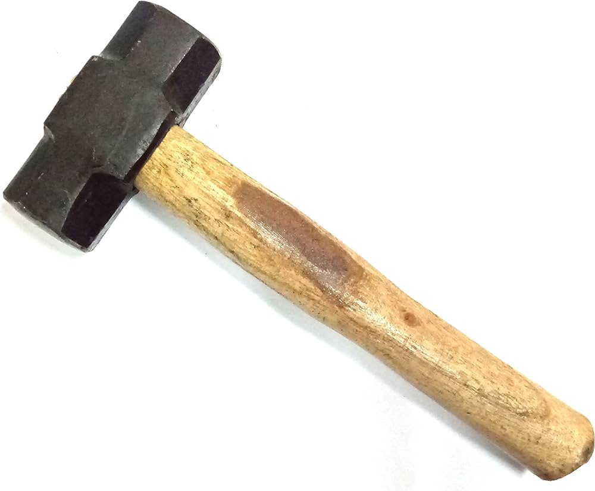
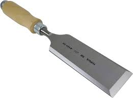
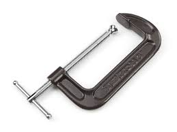

Introduction
Carpentry is a highly skilled trade that involves working with wood and other materials to construct, repair, and install structures and fixtures. In an engineering workshop, carpentry skills are essential for building and maintaining equipment, furniture, and other wooden structures.
Tools and Materials
Carpenters use a variety of tools, including hand tools, power tools, and machinery, to cut, shape, and assemble wood and other materials. They must also be familiar with different types of wood, their properties, and their uses.



Skills and Knowledge
To become a skilled carpenter, one must possess a range of skills and knowledge, including construction knowledge, mechanical skills, strength, and attention to detail. Carpenters must also be able to read blueprints, follow instructions, and work safely.
Safety Considerations
Carpentry can be a hazardous occupation, with risks of injury from power tools, sharp objects, and heavy materials. Carpenters must take precautions to prevent accidents, including wearing personal protective equipment (PPE) and following safety guidelines.
Introduction
Carpentry is a skilled trade that involves working with wood and other materials to construct, repair, and install structures and fixtures. From building homes and bridges to creating furniture and decorative items, carpentry is an essential part of our daily lives.
History of Carpentry
The history of carpentry dates back to the dawn of man. The first tools from early people were made from stone, bone, antlers, and other materials. As time went on, they found ways to make more sophisticated tools, but their primary focus remained on shaping wood into valuable objects such as utensils.
Ancient Civilizations That Used Woodworking
- Egyptian Civilization
- Chinese Civilization
- Roman Civilization
Woodworking tools have been used in constructing homes, temples, and monuments for thousands of years. The Egyptians were so fond of wood that many of their tools were made from wood. They used different woodworking tools to create pyramids, tombs, and palaces.
History of Woodworking Tools
Humans began fashioning and using tools as early as 2.6 million years ago. In the Stone Age, ancient peoples turned stones into basic tools such as hammers and axes, and they also leveraged sharp animal bones in more advanced toolmaking.
History of the Hammer
The hammer as we know it today consists of a handle and a head usually made of iron. But the earliest hammers began as only a granite hammer head, which was used to break stones into smaller pieces of flint. Over time, humans added the handle using a string of leather or vine for more control and precision.